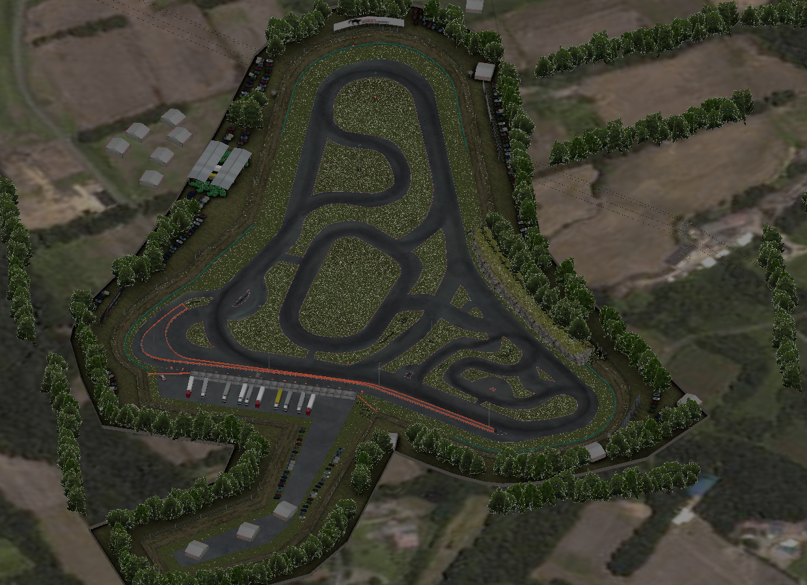
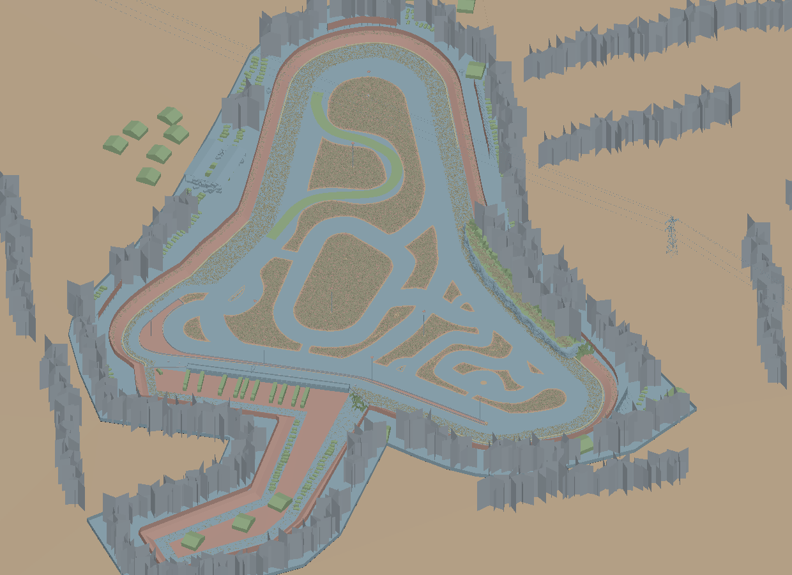
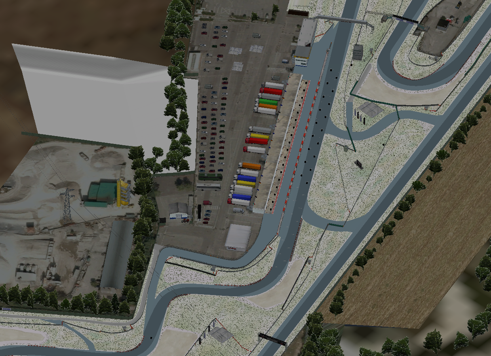
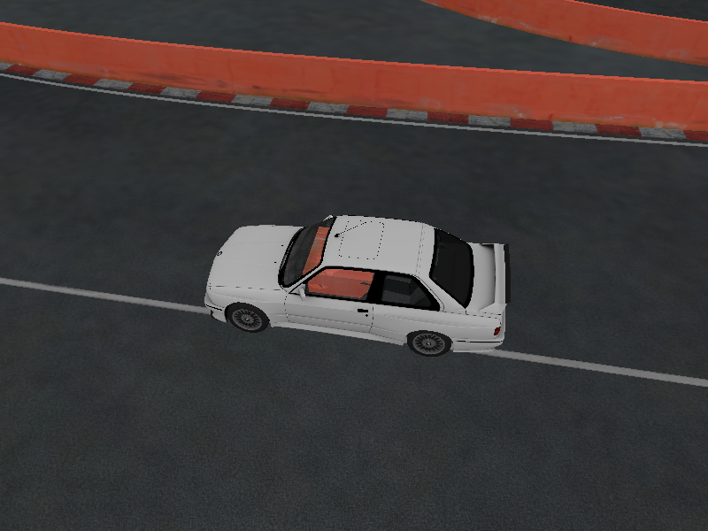

Real captures from the native Rust renderer, read back from the GPU. They show locally installed Assetto Corsa content; none of it is distributed here.
Milestone comparisons
Drag the handle to compare an earlier openASC capture with a later one.


First native frameMultilayer base colour
Drift track: diagnostic colours to source textures The first Rust and wgpu frame used flat diagnostic colours. The current frame combines masks and four source detail textures per material. Lighting, shadows and normal maps are still missing.

Two KN5 files, diagnostic fallbacks85 multilayer draws, 63 resources
Magione: composed models to multilayer materials Eight textures exceeded the decoded-texture budget in the first composition. Direct BC uploads and the multilayer formula restored road and grass colour.

Time zero1.6 s after throttle and steering
BMW M3 E30 on Drift: standing, then driving The same fixed camera before and after the scripted drive. The coupled Rust chassis, suspension, wheel spin and rack steering move the car.
Against the original game
No side-by-side capture of the original simulator is published yet, so openASC does not claim visual parity. Slots below fill in as matching captures are made.
openASC
Original capture needed Assetto Corsa, same car, track and camera.
BMW M3 E30 at Drift pit, openASC against Assetto Corsa Needs a matching capture of the original game with the same car, track, spawn and camera.
All captures
Source wheel dimensions Wheel centres and tyre radii come from explicit source references. Native GPU capture at 1.6 s.
Articulated wheels and suspension Four wheel and four upright groups follow the coupled solver through source-node bindings.Wheel forces move the car Chassis, suspension, wheel spin and rack steering update the GPU car root.Initial state The same camera before throttle, steering and braking.BMW and Drift in one scene 166 car draws share a renderer with the track and 72 embedded textures.Multilayer colour, Drift 46 draws across six materials combine a mask and four detail textures.Multilayer colour, Magione 85 draws across seven materials, 63 resources.


 openASC
openASC